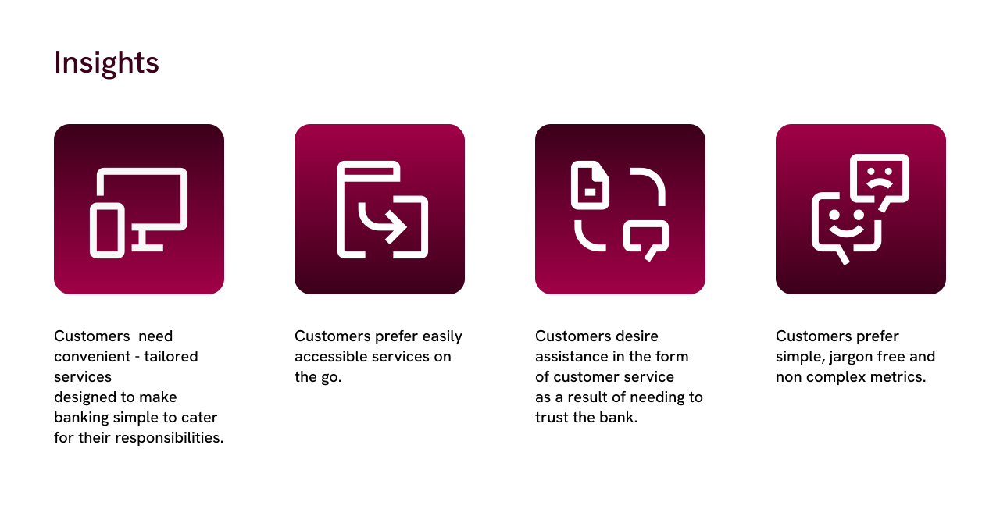
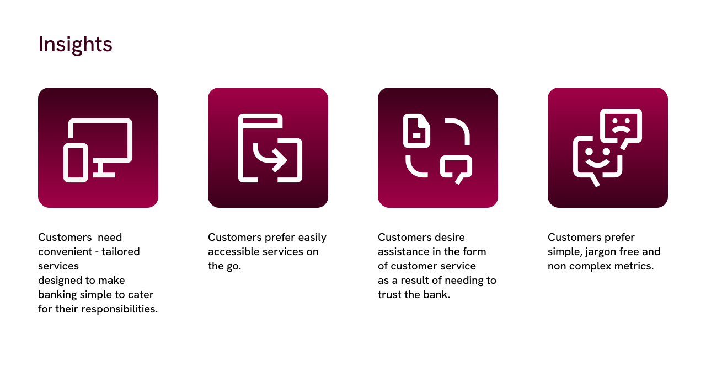

Back

Connected Banking
The task of this design project is to make a dashboard that combines the most accessed feature from both the ABSA online and Connected banking platforms, to create a single platform that is user-friendly, visually appealing, and provides a seamless user experience. The goal is to simplify the banking process and provide the customer with a simple and relevant digital service.


 
